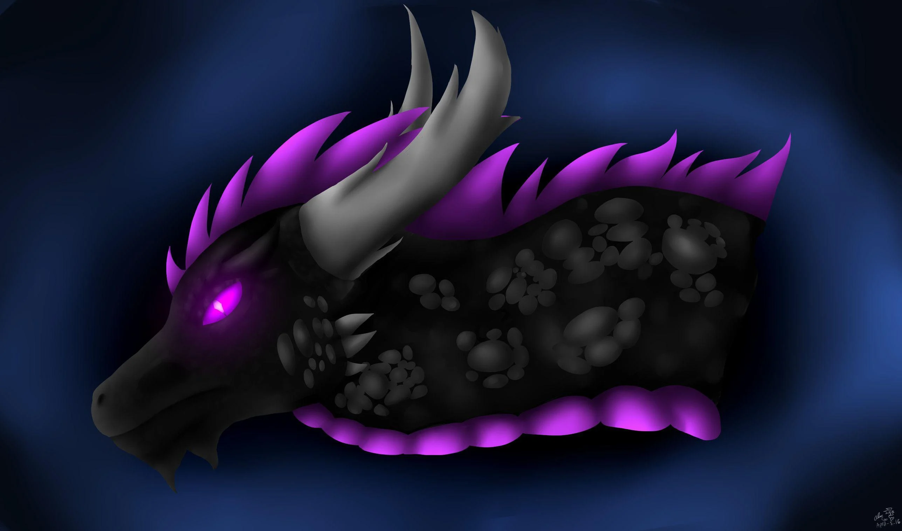
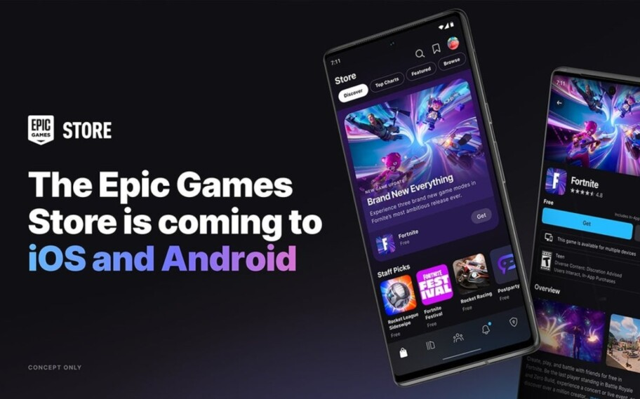
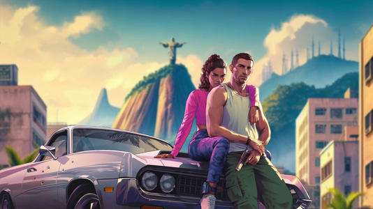
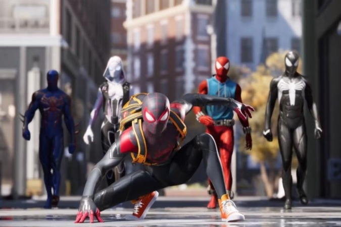
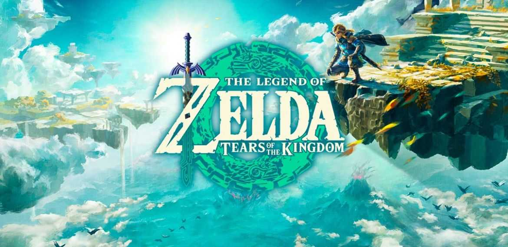

NOTÍCIAS THE END
|  |
sobre |
últimas notícias
Epic Games Store chegará para aparelhos mobile Android e iOS |

Mods de GTA 6 devem demorar para chegar, revela modder brasileiro

| Jogo multiplayer cancelado do Homem-Aranha tem trailer vazado |

Quase um ano depois, fãs estão certos de que d
escobriram novidades
sobre relacionamento de Link e Zelda em Tears of the Kingdom |
